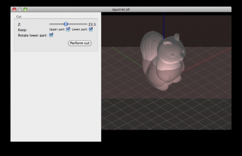

Release notes for 1.1.2 (2014-05-01)
This is an experimental release. Help us testing!
For the full list of new features see also the release notes for 1.1.0.
Thanks to Petr Ledvinap and Y. Sapir for their contributions (optimization, patches for bridges, code review).
New features:
- Ability to cut models in two with a slicing plane (resulting parts can be also exported)
- Support material is automatically excluded below successful bridges and only added where strictly needed in order to make anchors for potential bridges; this results in much lighter support material for parts having flat overhanging areas
Improvements:
- Support material distance from object was reduced and made more consistent
- A base flange is added below pillars support material in order to connect them on the build plate
- Spiral vase mode is prevented automatically for multi-island layers (#1938)
Bug fixes:
- Fixed an upstream bug in the Clipper library causing some random perimeter segments to be swapped in order (#1834)
- Bridge detection was choosing bad orientation in some cases
- Sometimes islands were not completed fully before moving onto the next one (#1137)
- Gap fill was not inserted in the corrected order before leaving an island (#1907)
- A regression caused the Default Extrusion Width option to be ignored (#1958)
- The [timestamp] placeholder in filename was not updated at every single job (#1957 #1995)
- A regression caused bad loading of multi-extruder values in GUI (#1984)
- Fixed regression and ambiguity about multi-value placeholders like _[first_layer_temperature1] (#1899)
- Fixed regression causing random lack of hole perimeters on Windows (#1950)
- Fixed random crash when closing the Object Settings window
The new cutting feature:

New smart support material, only added where needed for making potential bridges: